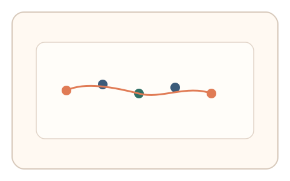
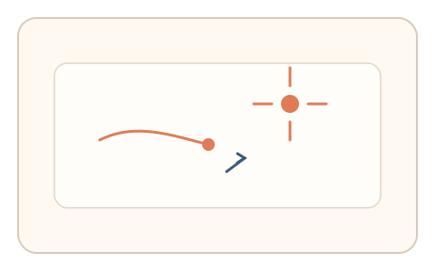
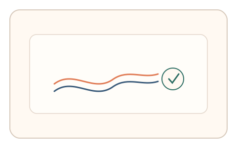

#89
Morphological Analysis - Combination Batches
已扩展
时域干扰步调
在短序列拖拽中插入闪现提示并要求即时反应，以拖拽节律与反应节律的耦合验证真实性。
概念原文
用户短序列拖拽时插入 1–2 个快速闪现提示并要求即时反应，系统比较拖拽节律与反应节律的任务内一致性。任务结构为短序列+双任务切换，信号形态为节律序列与轨迹动力学。
验证多通道节律耦合而非单任务完成度。
研究背景
双任务切换会在时序上产生稳定的干扰模式，真实用户的拖拽节律与反应节律呈现自然耦合关系。脚本难以同时拟合轨迹动力学与节律序列。
核心机制
- 用户执行短序列拖拽任务。
- 期间插入 1–2 次快速闪现提示并要求即时响应。
- 记录拖拽节律、反应时与节律耦合程度。
- 在任务内做相对比较形成判定。
用户流程
- 步骤 1：用户开始短序列拖拽。
- 步骤 2：出现闪现提示并即时响应。
- 步骤 3：系统记录节律耦合并判定。
判定信号
拖拽节律与反应节律耦合
真实用户在双任务下节奏会自然偏移。
反应时波动
双任务切换引发可预测的时序抖动。
判定逻辑
耦合关系需落在人类分布区间；过度独立或过度稳定判异常。
对抗面
- 脚本固定节奏进行拖拽与点击
- 重放真实用户的节律序列
防御与缓解
- 随机化闪现时机与拖拽路径
- 引入轻微速度扰动降低模板化
- 叠加轨迹微抖动信号进行多信号判定
可达性与风险
提供更慢节奏与简化提示，对注意力或动作障碍用户提供替代任务。
- 双任务负荷过高导致误拒
- 设备延迟影响节律同步
可视化状态

状态 1：拖拽序列
短序列拖拽任务。

状态 2：闪现干扰
插入闪现提示并即时响应。

状态 3：节律判定
对节律耦合与波动进行判定。
参考资料
Task switching
说明双任务切换对反应时的影响。
Sensorimotor synchronization
说明节律耦合与同步特征。